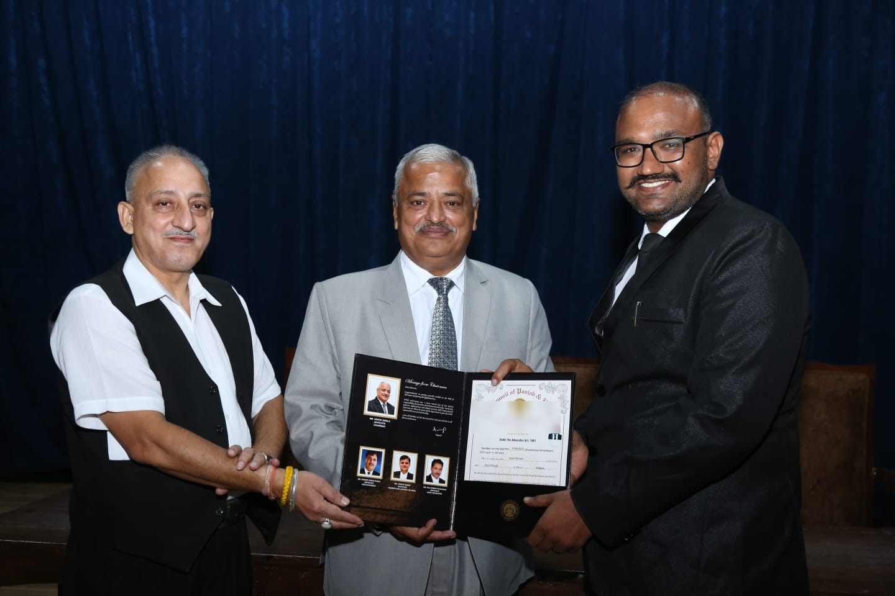

An independent legal practice at the meeting point of technology and law.
Advocate, enrolled with the Bar Council of Punjab and Haryana. Practising before the Punjab & Haryana High Court, Chandigarh, and other courts and tribunals. Background in computer science engineering and enterprise software before transitioning to the practice of law.
From enterprise software to the bar.
Arun Kumar is an Advocate enrolled with the Bar Council of Punjab and Haryana. Prior to the practice of law, he trained as an engineer, holding a Bachelor of Technology degree in Computer Science and Engineering.
He spent nine years in the information technology industry across India and the United States, including a role with Tech Mahindra Americas, working primarily as a Java developer and in service virtualization — a discipline concerned with simulating the behaviour of complex, interdependent software systems for testing and integration purposes.
As a Java developer, he worked on the customization of TeamConnect, a widely recognised legal matter management system, in engagements with enterprise clients — including Fortune 500 companies.
Having subsequently completed the Bachelor of Laws (LL.B.) and been enrolled as an Advocate, this background informs a practice oriented toward matters where legal questions and technical systems intersect — including software, data, and enterprise technology contexts — alongside a general litigation practice in criminal, civil, writ, and commercial matters.
This website is maintained solely to provide factual information about the Firm, in accordance with the Rules framed by the Bar Council of India under the Advocates Act, 1961. It is not intended, and should not be construed, as advertising or solicitation of legal work.
Qualifications.
B.Tech, Computer Science & Engineering
Foundational training in software systems, engineering, and computing.
Java Developer & Service Virtualization Specialist
Nine years across roles in the information technology sector, in India and the United States, including with Tech Mahindra Americas.
TeamConnect Customization
Worked as a Java developer on the customization of TeamConnect, a leading legal matter management system, for enterprise clients including Fortune 500 companies.
LL.B.
Bachelor of Laws.
Certificate Course in Cyber Law
Indian Law Institute, New Delhi.
Enrolled Advocate
Bar Council of Punjab and Haryana.
Courts & Tribunals
Punjab & Haryana High Court, Chandigarh, and other courts and tribunals, in criminal, civil, writ, and commercial matters.
ENGINEERING → INDUSTRY → LAW

General litigation, and matters at the intersection of law and technology.
In addition to a general litigation practice in Criminal (Original and Appellate), Civil (Original and Appellate), and Writ Jurisdiction matters, and Commercial Litigation, the areas below reflect a particular focus on Technology Law. These are furnished for factual, informational purposes only, as permitted under the Rules of the Bar Council of India, and do not constitute an offer, guarantee, or solicitation of engagement.
Criminal Law — Original & Appellate
Original and appellate criminal matters, including trial, bail, and criminal revision or appeal.
Civil Litigation
Original and appellate civil proceedings before civil courts and the High Court.
Writ Jurisdiction
Petitions under Articles 226 and 227 of the Constitution of India before the High Court.
Commercial Litigation
Disputes arising from commercial contracts, partnerships, and business transactions.
Information Technology Law
Matters arising under the Information Technology Act and allied regulation of digital systems and electronic transactions.
Data Protection & Privacy
Questions concerning personal data handling, privacy obligations, and compliance under applicable Indian data protection law.
Software & Technology Contracts
Review and drafting of software licensing agreements, service-level agreements, and enterprise technology contracts.
Intellectual Property in Software
Matters concerning copyright in source code, trade secrets, and IP considerations arising in software development.
Cyber Law & Electronic Evidence
Matters involving electronic records, digital evidence, and offences under cyber law statutes.
Technology Dispute Resolution
Disputes arising from software delivery, IT services, and enterprise technology engagements.
Notes on law and technology.
Independent commentary published from time to time, shared here for general reading. These pieces reflect personal analysis and academic discussion of publicly reported matters; they are not legal opinions on any specific case and should not be relied upon as advice. These articles are available in English on Medium.
The Right to be Forgotten and the Right to Erasure: A Narrative of Indian Jurisprudence
Traces how Indian courts have shaped an unwritten "right to be forgotten" from Article 21 privacy jurisprudence, alongside the narrower statutory right to erasure under the DPDP Act, 2023, and the boundary between the two as the Supreme Court prepares to weigh in.
EPFO Data Leak and the Absence of Data Protection Legislation
Looks at the reported exposure of Employees' Provident Fund Organisation data, and considers what it reveals about gaps in India's statutory data protection framework and the resulting risk to account holders.
Adoption of ML and AI in Fintech — Trust and Confidence
Examines how machine learning and AI systems have reshaped customer trust in banking, and the accompanying concerns around algorithmic bias and accountability.
Data Privacy Theories — Sufficient to Cover Modern Day Challenges?
Reviews classical and contextual-integrity theories of privacy against present-day data practices, in light of the Supreme Court's recognition of privacy as a fundamental right.
Digital India: Security, Transparency, COVID-19 & Fiasco?
Considers gaps exposed in India's digital governance infrastructure during the pandemic, drawing on publicly reported data-handling incidents of that period.